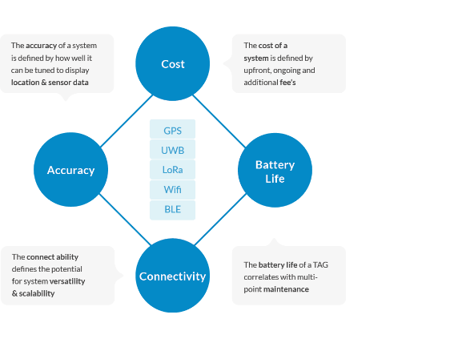

Comparing real-time tracking technologies

Understanding the fundamental benefits of real-time tracking technologies promotes educated and solution oriented decision making. The diamond model serves to illustrate pillars of core criteria, which must find compatibility with the problem statement.
We are passionate about helping business track their vital assets - in the best possible way.
| Cost | Connectivity | Accuracy | Battery Life | |
| GPS | High | Medium | Medium | Low |
| UWB | High | Low | High | Medium |
| LoRa | Medium | Low | Medium | High |
| Wifi | High | Medium | Low | Low |
| BLE | Low | High | Medium | High |
By design active TAG’s periodically transmit at their native frequency, each containing their own power source. The Atlas platform harnesses the power of all major technologies seamlessly.